Implémenter et utiliser systèmes à base d'agents dans une démarche ComMod
Par Etienne Delay et R. Duboz mai 2019, Châteauneuf Gadagne Slide sur : https://huit.re/HPMAw7G1
Un peut de théories
Modélisation, formaliser, simuler, théoriser
Formaliser
Obtenir une représentation non ambiguë du modèle en vue de l'exécution de simulations sur ordinateur
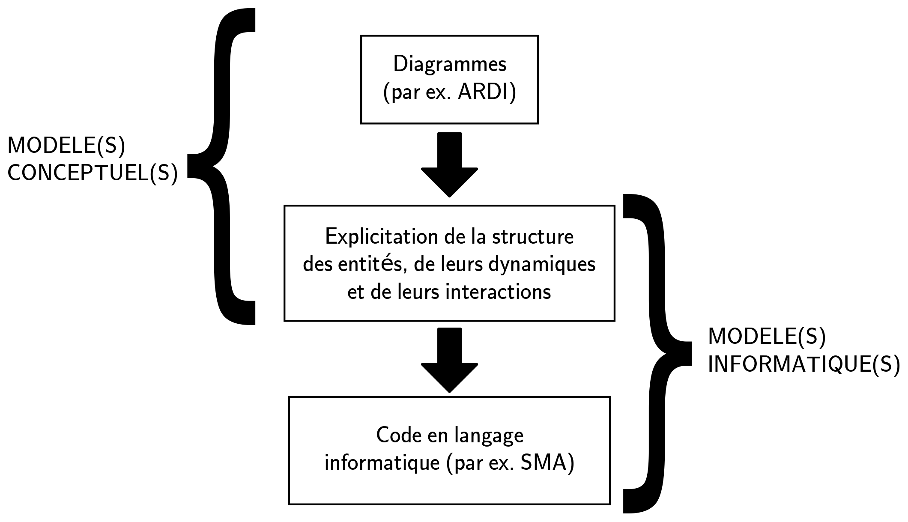Formaliser implique des choix
- Le cadre spatio-temporel
- le territoire concerné
- les échelles spatiales
- la temporalité représentée
- les échelles de temps
- Le séquençage des activités dans le temps
- Le degré de réalisme de la représentation
- Les points de vue sur chaque ressource

Simuler
“La simulation consiste à plonger le modèle dans le temps”
P. Coquillard et D.R.C. Hill 1997
Les simuation servent à explorer le fonctionnement et les propriétés d’un système modélisé ainsi qu’à en étudier son évolution
Prédire ≠ Expliquer
“La théorisation [...] est liée à la possibilité de plonger le réel dans un virtuel imaginaire, doté de propriétés génératives, qui permettent de faire des prévisions”
R. Thom 2009
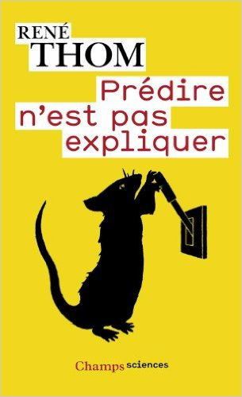Les SMA quezako
Les SMA : définition
Un agent est une entité physique ou virtuelle
- capable d'agir dans un environnement
- mue par un ensemble de tendances (sous forme d'objectifs)
- capable de percevoir (de manière limitée) son environnement
- dont le comportement tend à satisfaire ses objectifs
J. Ferber 1995
crédit photo : Y tambe in wikimedia commonsLes Systèmes multi-agents
Resnick, M. (1994)
Explorations du Modèle ants
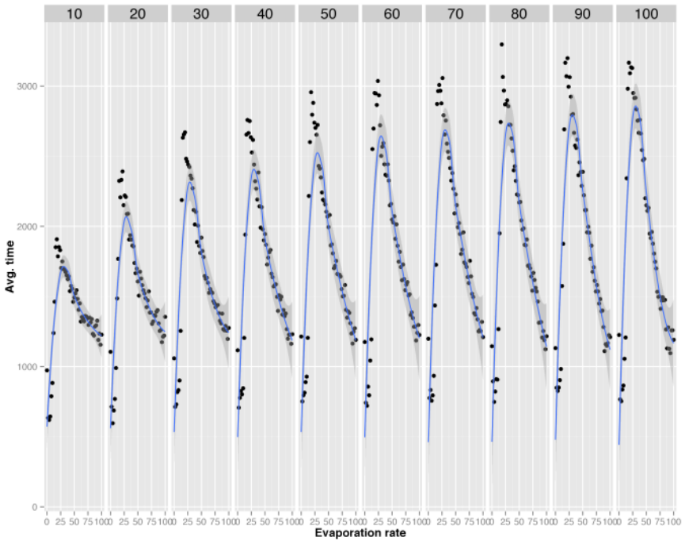Delay et Piou (2014)
Les SMA en Sciences Sociales !
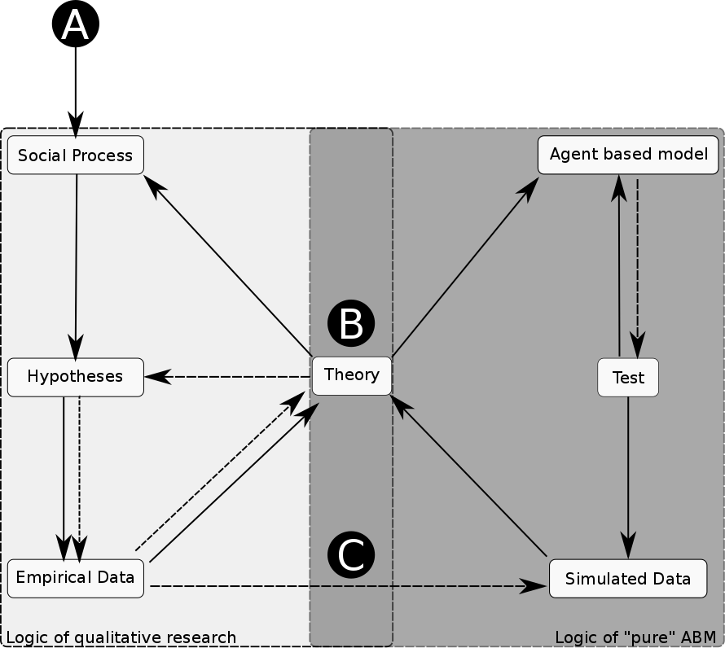Du choix de l'outil
- Langage de programmationJAVA, Smalltalk, C++, python, R
- Environnement de développement (IDE), la plupart des langages sont associés à un environnement qui facilite le développement, les tests, la définition d'interfaces-utilisateurs
- Plateforme multi-agentSouvant un langage de plus haut niveau pour faciliter la définitions des classes du modèle ( CORMAS, NetLogo, REPAST, GAMA)
ReHab comme fil rouge
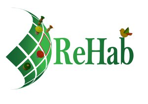ReHab : un diagramme ARDI
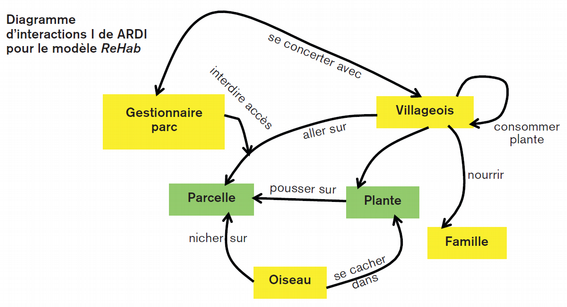ReHab : vers plus de formalisme avec UML
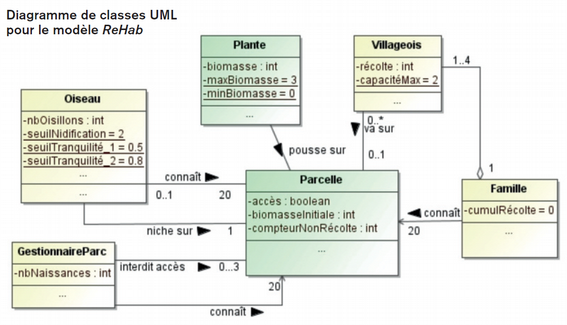Régénération de la ressource

De l'UML au pseudo-code
If biomass here < 2 then nbChicks = 0 else if any harvester here then nbChicks = 0 else case based on proportion neighbouring cells harvested case > 0.5 nbChicks = 0 case between 0.2 and 0.5 nbChicks = 1 case < 0.2 nbChicks = 2
Implémentation avec CORMAS ou NetLogo
Synthèse des résultats de 54 parties

Utilisation
Acidity GIS
Explorer la réponse d'un territoire à différentes payoff de la coopérative pour faire face au changement climatique
Study area 1/2

Study area 2/2
| vineyard surface | 1300ha |
| winegrower | 680 |
| cooperator | 94% |
| Vineyard surface in coop. | 79% |
| Number of coop. | 3 |
Climatic stuff
Since 2012, thanks TERVICLIM -- ADVICLIM program we have 11 temperature sensor in vinyards
Grape ripening and space
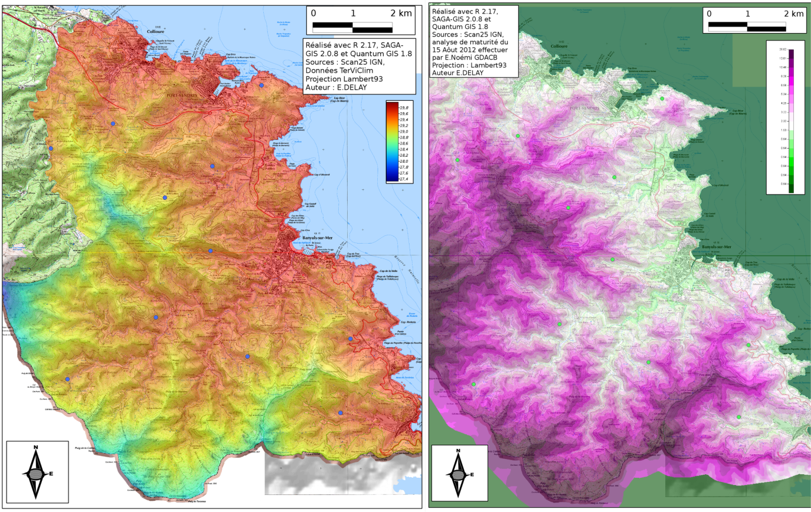Vinegrower and Companion Modelling
we work on socio-spacial vinegrower behavior, and different scenario with the cooperative in a iterative way.
- Work in focus-group (FC)
- ABM formalisation
- Critical workshop with FC
- ABM formalisation
- ...
AcidityGIS structure
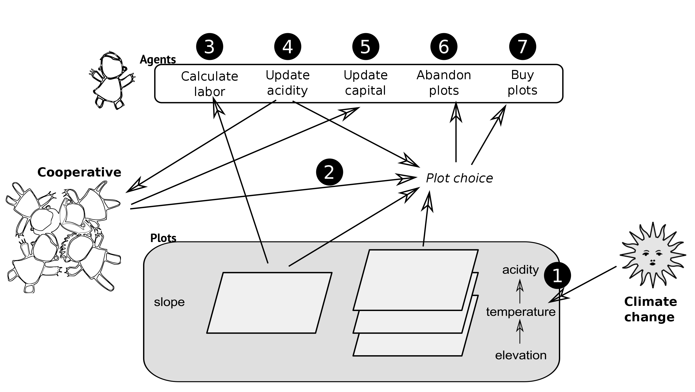With climate change, the temperature rise is expected to decrease acidity since the total acidity is correlated with temperature (e.g. (see the works of Buttrose et al., 1971; Van Leeuwen et al., 2004; Sweetman et al., 2014, etc.)
Coop. behaviors
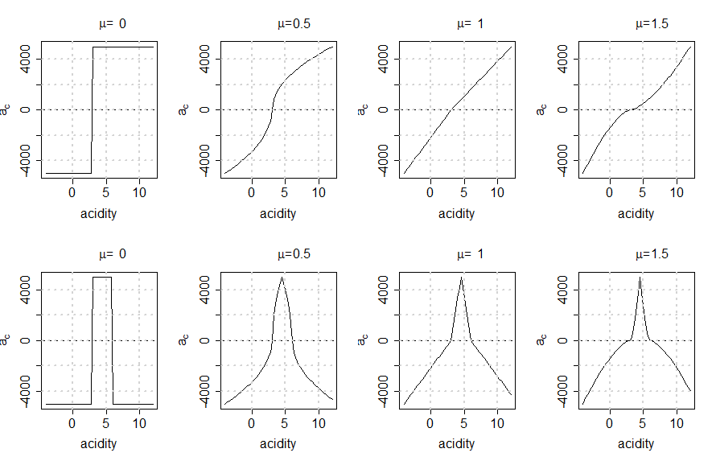Target : 3 g × L−1 of sulfuric acid
Sensibility Analysis
With ABM, and COMMOD we deal with uncertainty... so our model is systematically explored with 1920 simulations
(8min each ~ 10j CPU)
Some results
What happened with acidity ?
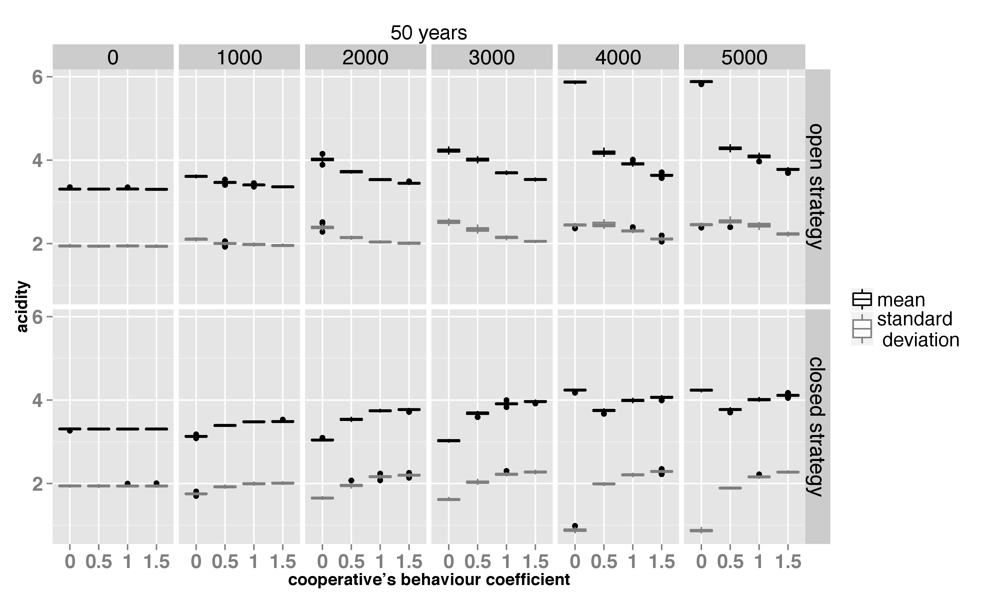Landscape : an other issues
Cooperative can influence different kind of landscape ?
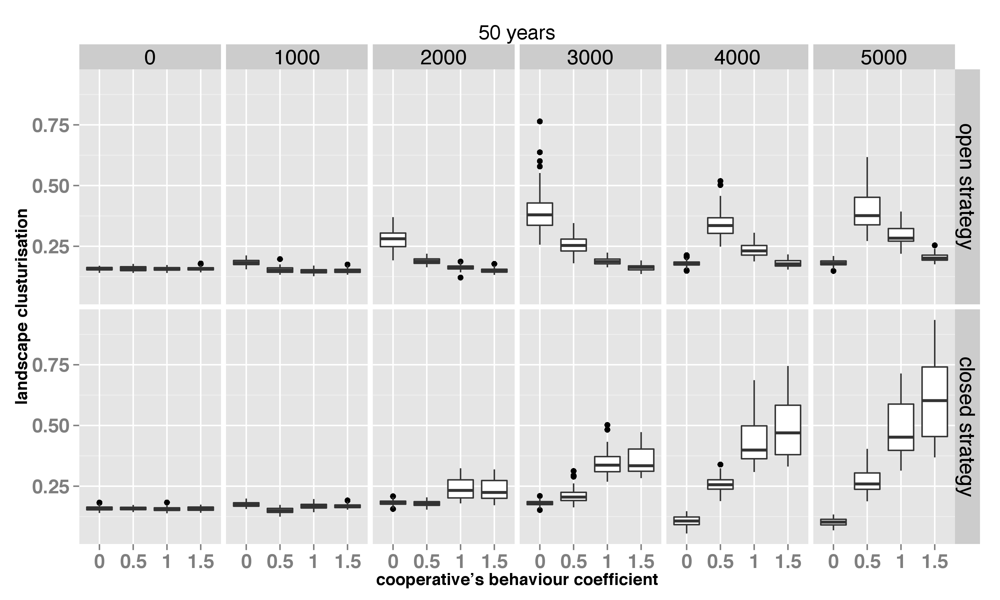LittoSim
coastal risk management in Oléron
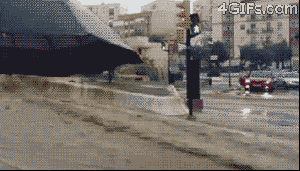Deficiency of coastal risk management in France
- A lack of risk culture highlighted by Xynthia storm
- For population
- For policy-makers : municipalities
- Risk prevention measures and urban planning controlled by local political bodies
- Concrete dikes are the dominant, and almost only, prevention strategy
Participatory simulation and social learning
- Experiential learning
- Social exchange
- Decision support


Architecture of a challenging project
- Bringing advanced flooding simulation
- Encourage a shift to long-term
- Integrate both vertical and horizontal coordination issue
Follow behaviors
Pour conclure
Je me pose une question : je peux agentifier !

Thank you for your Attention


{kind=link}
You can find this presentation on GitHub
realized with reveal.js